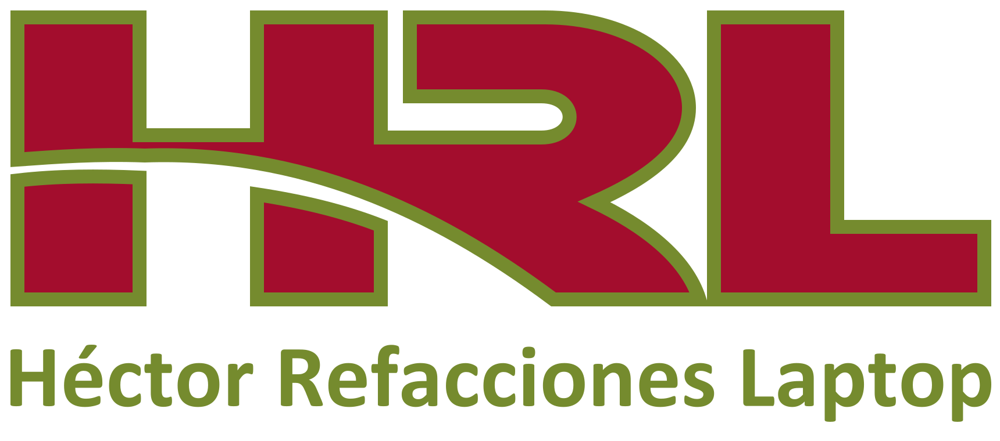
HRL · Versiones del logo
Reconstrucción vectorial de LOGO@2x. Bordes limpios, fondo transparente y nombre convertido a trazados: los archivos no dependen de fuentes instaladas.
Rojo HRL · #A30D2D
Olivo HRL · #758B2E
Azul petróleo · #17384A
Azul de acento · #1B72AD
Logo completo


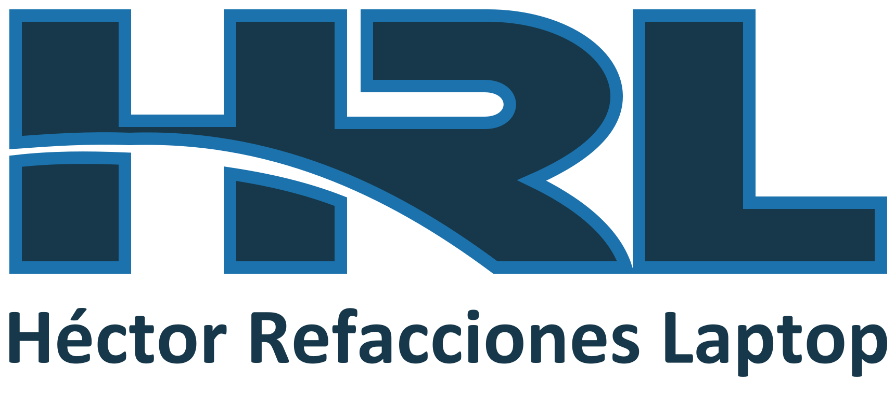

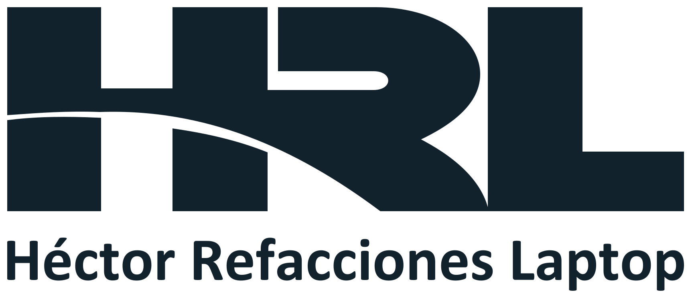


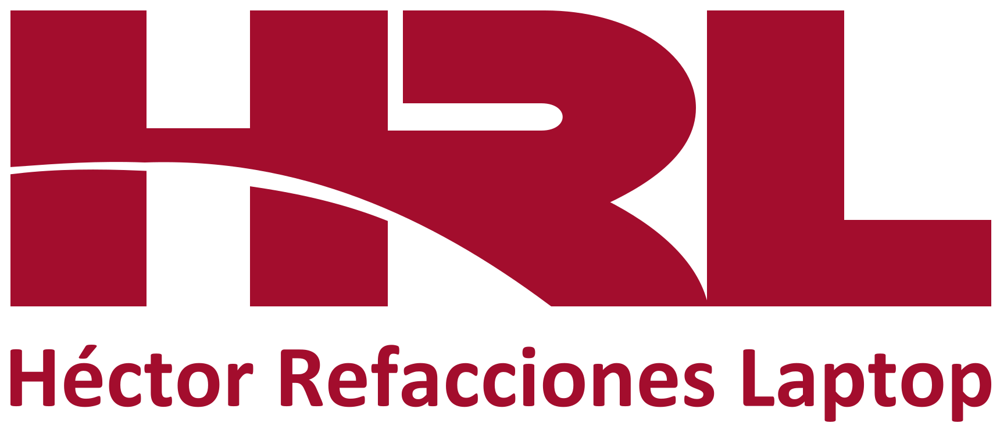

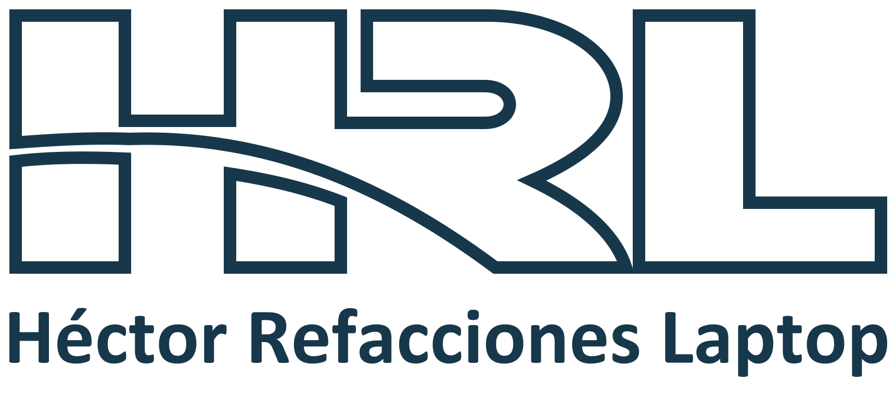

Monograma sin nombre
Úsalo en tamaños pequeños, donde el nombre completo perdería legibilidad.
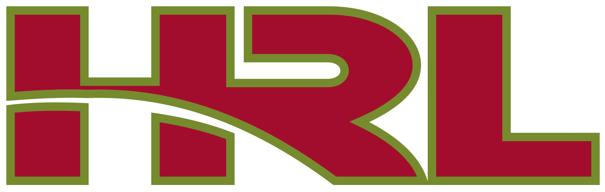

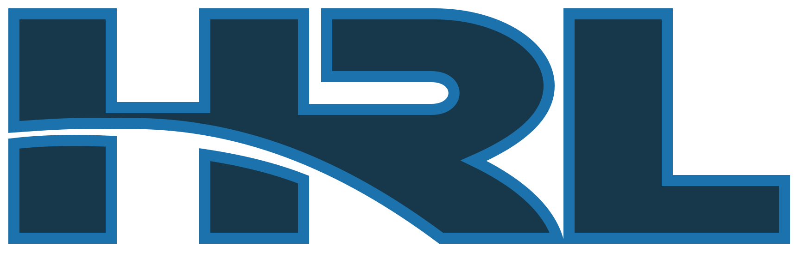

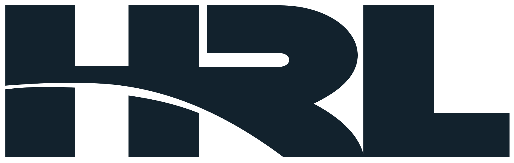


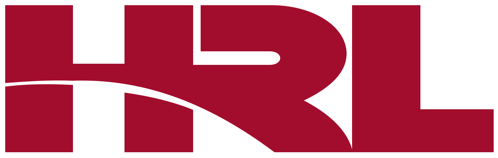

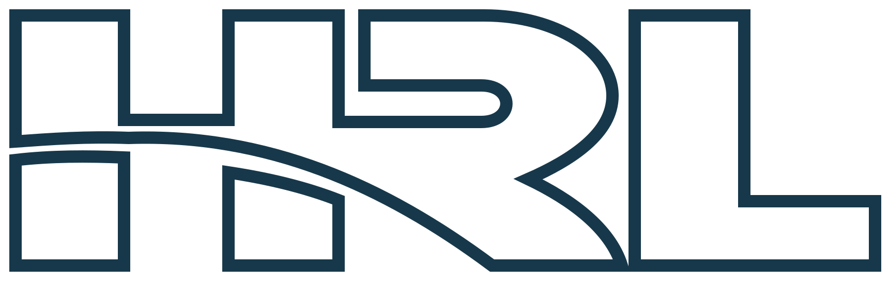

Ejemplo en fondo oscuro
Uso de los archivos
Todos son SVG reales, con trazados editables y sin mapas de bits incrustados. Conserva sus proporciones. La versión original es la principal de la aplicación; las alternativas están disponibles sin sustituir sus colores automáticamente.